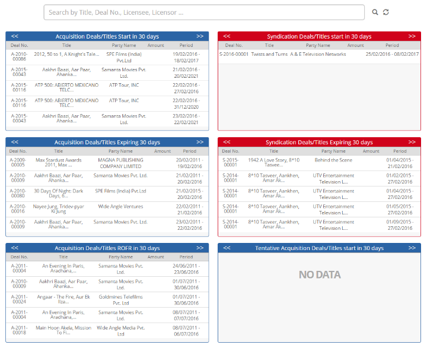


	<section>
		<article>
			<h2>Dashboard<span></span></h2>
			<div>
				<p></p>

				<p>As the name suggests, it is a dashboard showing overview of deals by filtering on different criterias.</p>

				<div class="triangle-border top">				
					
				</div>

				<p>Following are the criterias for which records are shown on dashboard.</p>

				<p>- <b>Acquisition Deals/Titles start in 30 Days</b> shows data of acquisition deal/title starting in next 30 days.</p>

				<p>- <b>Acquisition Deals/Titles Expiring in 30 Days</b> shows data of acquisition deal/title expiring in next 30 days.</p>

				<p>- <b>Acquisition Deals/Titles ROFR in 30 Days</b> shows data of acquisition deal/title having ROFR in next 30 days.</p>

				<p>- <b>Syndication Deals/Titles start in 30 Days</b> shows data of syndication deal/title starting in next 30 days.</p>

				<p>- <b>Syndication Deals/Titles start in 30 Days</b> shows data of acquisition deal/title expiring in next 30 days.</p>

				<p>- <b>Tentative Acquisistion Deals/Titles start in 30 Days</b> shows data of tentative acquisistion deals/titles starting in next 30 days.</p>
				
			</div>
		</article>
	</section>